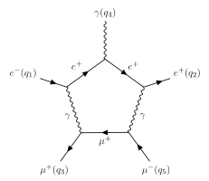
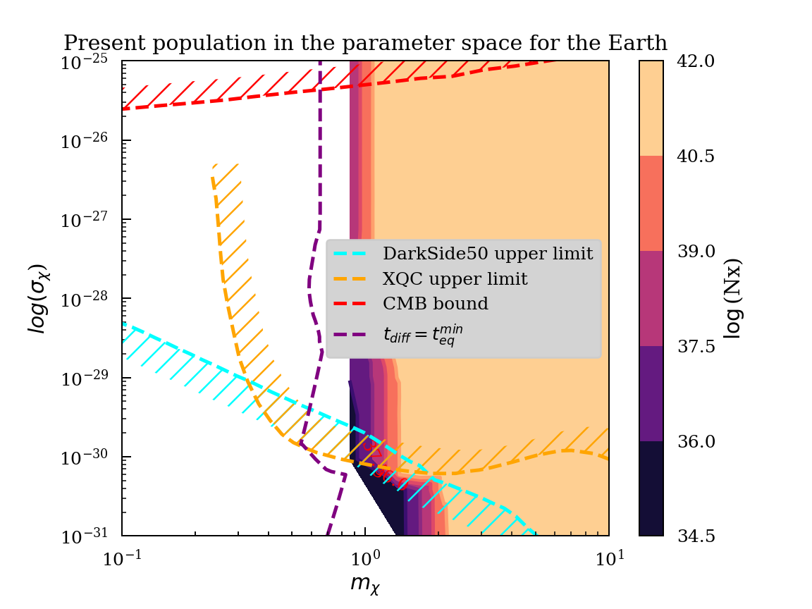
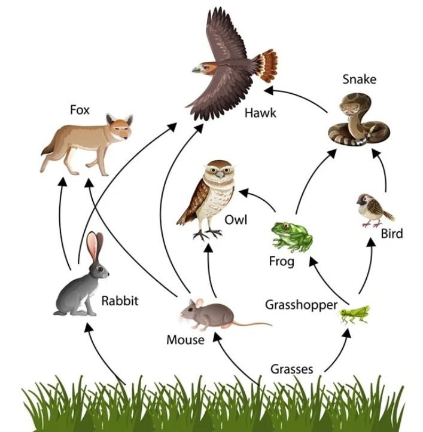
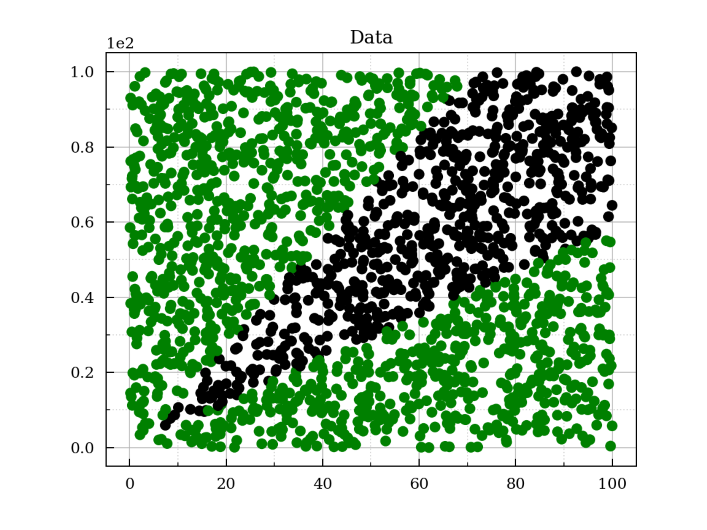
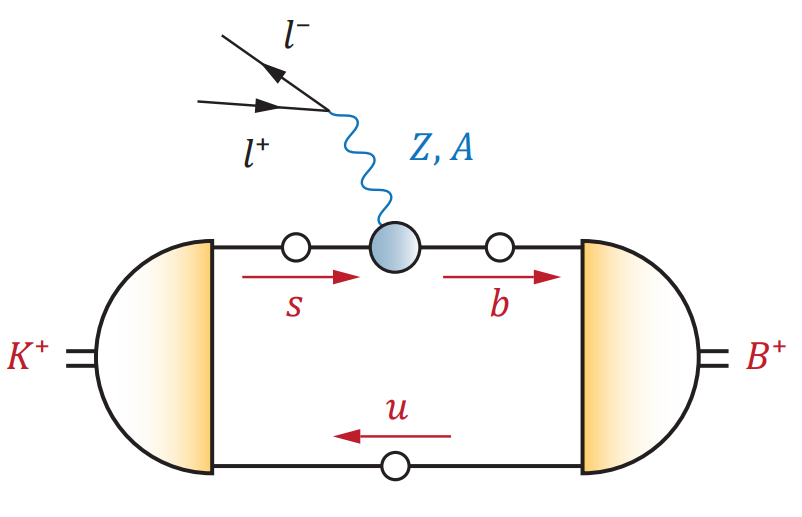
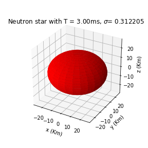
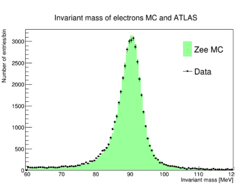

University of Liverpool · PhD researcher
Pau Petit Rosàs
I compute scattering amplitudes and turn them into code that runs — fast enough to sit inside a Monte Carlo generator, precise enough for the muon g−2 frontier.
Currently Feynman integrals
Click anywhere for a diagram
Peace, in Catalan
A short account of how I ended up chasing a discrepancy in the eighth decimal place.
Liverpool, UK · 53.4°N
My name is Pau, which means peace in Catalan. I grew up in Cardedeu, a small town near Barcelona, and left it for Theoretical Physics at the University of Manchester. The subject took hold, and I now do a PhD at Liverpool on one of the sharpest open cracks in the Standard Model: the muon g−2 anomaly.
Day to day that means two things at once. I evaluate Feynman integrals, the objects that encode how particles talk to one another, by integrating their differential equations numerically. And I make those evaluations fast enough to live inside a Monte Carlo event generator, so that a theory prediction can actually be compared against what a detector saw.
Along the way I picked up the Tessella Prize for best use of software in a master's thesis, a First Class degree, and, in a previous life, a gold medal at the Catalan National League of Debate. My PhD is funded by the Leverhulme Trust.
Away from the terminal I dance salsa and bachata, eat, run, and build small things for the pleasure of it. A few of them are further down this page.
- Based inLiverpool, United Kingdom
- Reading forPhD in Theoretical Physics · Oct 2023 → present
- Supervised byProf. Graziano Venanzoni, Prof. Thomas Teubner, Dr William J. Torres Bobadilla
- Funded byThe Leverhulme Trust
- Working onAmplitudes · Feynman integrals · Phokhara · muon g−2
Publications
Seven papers on radiative corrections, Feynman integrals and the tools that make them usable. Open one to see the full record.
Things I built
Research code, theses and side projects — from neutron stars to genetic algorithms.

PhD thesis — amplitudes for the g−2 frontier
Scattering amplitudes and Feynman integrals for low-energy e⁺e⁻ collisions, and their implementation inside a Monte Carlo generator. Supervised by Prof. Graziano Venanzoni, Prof. Thomas Teubner and Dr William J. Torres Bobadilla.
RadioMonteCarLow 2
Ongoing community effort benchmarking Monte Carlo generators for low-energy electron–positron colliders, under STRONG2020.

Dark matter inside the Earth
Master's thesis with Prof. Darren Price, awarded the Tessella Prize for best use of software.

Ecosystem simulation
An ecosystem evolved with genetic algorithms, kept fast by a hand-rolled quadtree for neighbour queries.

Toy neural network
Built from scratch to understand the mathematics behind neural networks — no frameworks, just backpropagation and linear algebra.

QCD contributions to flavour anomalies
Summer research at LIP, Lisbon, under the supervision of Dr Gernot Eichmann.

Rotating neutron stars
Numerical relativity coursework: solving the structure equations for rapidly rotating compact stars.

Z boson cross-section measurement
Extracting the Z production cross section from collider data, with the full statistical treatment.
What I work with
High-performance numerics, mostly. Written to be read by other physicists.
Python
- NumPy
- SciPy
- Pandas
C++
- MPI & OpenMPI
- Boost
- Odeint
Fortran
- High precision
- Optimisation
- Legacy generators
Linux
- Bash
- Git
- HPC clusters
Mathematica
- Symbolic algebra
- Integral reduction
- Prototyping
LaTeX
- Papers & proceedings
- Talks
- Figures
The worldline
Education, research posts and the occasional medal, in reverse order.
Oct 2023 — Present Education
PhD in Theoretical Physics
University of Liverpool
Scattering amplitudes and Feynman integrals for low-energy e⁺e⁻ collisions, implemented in a Monte Carlo event generator. Funded by the Leverhulme Trust.
2023 Award
Leverhulme Trust grant
The Leverhulme Trust
Funding covering the PhD stipend and research travel.
Jul 2023 — Oct 2023 Research
Visiting Researcher
LIP — Laboratório de Instrumentação e Física Experimental de Partículas, Lisbon
Studied QCD contributions to flavour anomalies under the supervision of Prof. Gernot Eichmann.
Jun 2023 — Jul 2023 Teaching
Physics teacher, internship
Learners First
Taught A-level and high-school physics through the Learners First programme.
Sep 2019 — Jun 2023 Education
MPhys in Theoretical Physics
University of Manchester — First Class Honours
Master's thesis on dark matter capture inside the Earth. PASS leader and student ambassador throughout.
2023 Award
Tessella Prize
University of Manchester
Awarded for the best use of software in a master's thesis.
2020 — 2023 Work
Student Ambassador
University of Manchester
Represented the university at open days and outreach events for three consecutive years.
Sep 2017 — Jun 2019 Education
Spanish Baccalaureate
Escola Ginebró, Catalonia — 97%, top of class
Scientific track: mathematics, physics, chemistry and biology, alongside Catalan, Spanish, English and philosophy.
2018 Award
Gold Medal
Catalan National League of Debate
Won with the Escola Ginebró team — still the most useful training in explaining an argument I have had.
Unpeer-reviewed
Books and films, with entirely subjective verdicts.
Books

The Kingkiller Chronicle · Rothfuss
This has to be first on the list. Rothfuss' books are a masterpiece of fantasy, which I devoured when I was younger. Rereading them now doesn't make them any less good — maybe nostalgia is altering my judgement, but who cares? Very unfortunate that we will never know how they end.
Read more

21 Lessons for the 21st Century · Harari
My first book by Harari — yes, before Sapiens — and I understand why he is so popular. It touches on many topics, few of them light, yet reads easily and gives plenty of food for thought. I had to stop more than once to argue with myself about the ideas in it.
Read more

Fictions · Borges
I do not like the writing style of this book — I am one of those who believes writing can be both simple and beautiful. Nevertheless it is one of the best books I have ever read. Almost every story is, by itself, one great idea. I can't vouch for the English translation, but the original is a masterpiece.
Read more

The Three-Body Problem · Liu
I don't really understand the excellent reviews. The initial world is genuinely interesting, but the book commits the worst crime a sci-fi book can commit, in my opinion: it sets up rules and then doesn't respect them. I can believe in aliens with a different understanding of physics; I can't understand why sophons that can alter vision and sabotage large-scale experiments can't simply kill the main characters. Maybe I should read the rest of the trilogy. I don't think I will.
Read more
Films

About Time · Curtis
The best feel-good film I have seen. It is a love story, but aimed more at life itself than at a person. I recommend it to everyone I can, and I have never heard a bad review back.
Read more

Mother! · Aronofsky
If you are like me and love trying to guess the ending, this is for you. I spent the first half trying to work out what was going on and the second half trying to work out what would happen. It won't change your life, but you'll enjoy it.
Read more

Fight Club · Fincher
I picked Fight Club, but I would take most of Fincher's work. Seven, Gone Girl, Mindhunter — he finds a good story and knows exactly how to tell it.
Read more

The Prestige · Nolan
And of course Nolan has to be here. As with Fincher I could add Interstellar, The Dark Knight, Oppenheimer and more. The Prestige, though, is my favourite of everything he has made.
Read more